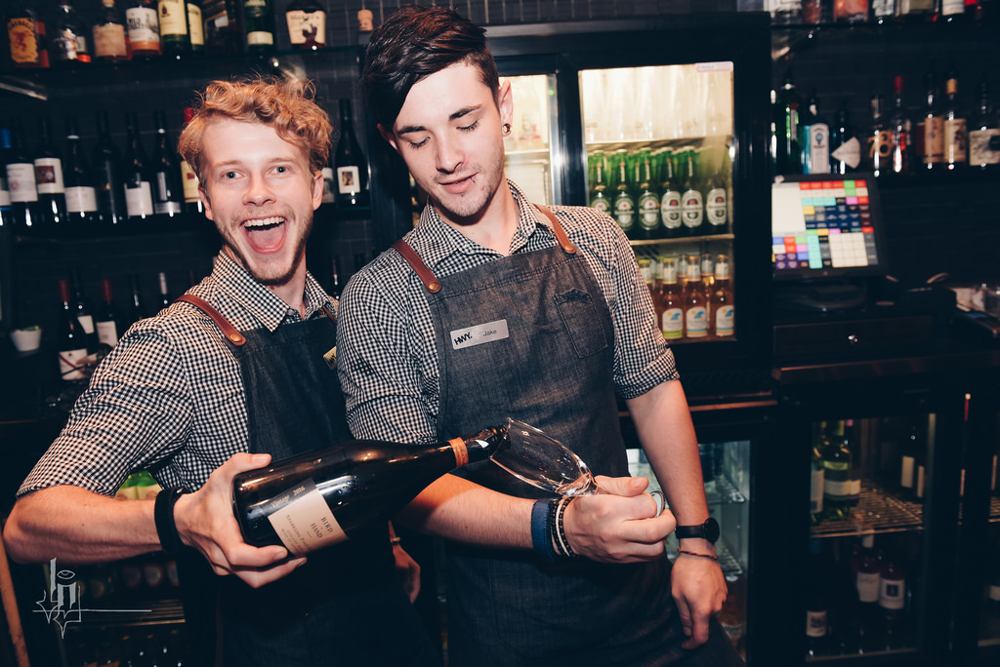
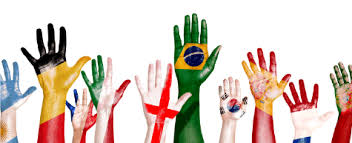
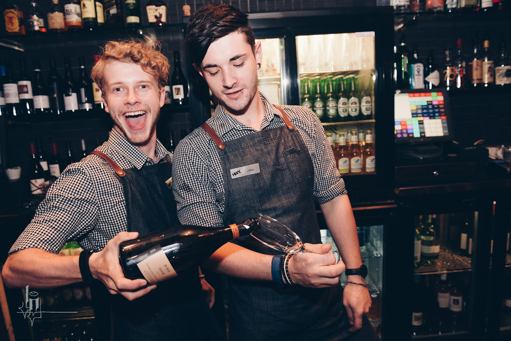
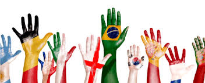

If you just moved you can find out what's happening in Language & Culture meetup groups around the world and start meeting up with the ones near you.

Tired of counting the dots on your ceiling Did you move all of the jelly beans from one jar to the other? New in town? Let's get you out of that stuffy house asap and find a friend, do fun stuff or just go to a local coffee shop and have a statting contest?
UpBeat helping neighbors getting together to learn something, do something, share something…

If you just moved you can find out what's happening in Language & Culture meetup groups around the world and start meeting up with the ones near you.

Also if you are tired of socialmedia and looking someone for human contact to join you for a walk or hanging out, we are here to help you!
Hey guys,
I want to share my story with you how I applied dating advice from Mating Grounds to make friends in Austin. I moved here in February after turning 25 without knowing anybody. Since then I’ve managed to surround myself with a lot of great friends. The process I used was simple, actionable and fun.First I imagined the qualities of the people I wanted to be friends with.
– Fun
– Outgoing
– Friendly
– Kind
– Open minded
Since smarter people than me have figured out that you’re basically the average of the people you surround yourself with, I wanted to find people who will make me a better person.Next I went on BeatUp to find groups where I would meet these people. I figured I would get along with people who are interested in the things I am. Here are some examples. – Post college grad happy hours
– Crawfish boils
– Sunday funday bar crawls
– Beer run club
– Food truck events
– Group fitness events like crossfit/bootcamps
I had the most success with the beer run club. I think it was successful because its a group of socially active people who gather together on a regular basis around a specific activity (running and beer). Since I’m shy and mildly awkward around new people (isn’t everyone?) I would basically bribe my way into groups buy buying and sharing pitchers of beer.
Eventually I would interact with the same people every week, and they would introduce me to more people. We would invariably talk about cool things to do in town, and then organize groups to go do those things. Fast forward a few weeks and that group is now the group I do potluck dinners with, surprise birthday parties, group yoga, bar hop on the weekends and so on and so forth.
A big reason I’ve had success making friends is living in a town like Austin. One of the nice things about this town is that nobody is actually from here. You’re basically forced to be friendly and open minded. Being a dick isn’t a viable strategy. In Miami, where I’m from everybody is basically friends with the people they went to high-school with.
The girls I’m friends with have been invaluable. They point out the dumb shit I wear, provide constructive dating profile advice, and go out of their way to introduce me to their girlfriends. Meeting new girls has never been easier.
All in all, I think I’ve come away with valuable takeaways.
– Decide what kinds of people you want to surround yourself with.
– Go do things those people would do
– Deal with the fact that you’ll be awkward and terrified around new people. Everybody else is.
– Don’t try to have sex with all the hot girls in your group. Many of them will make better friends.
– Invest a lot of time building quality relationships.
Thanks for the work you’ve all done. It really has made a significant impact in my life.-Alex
BeatUp@gmail.com